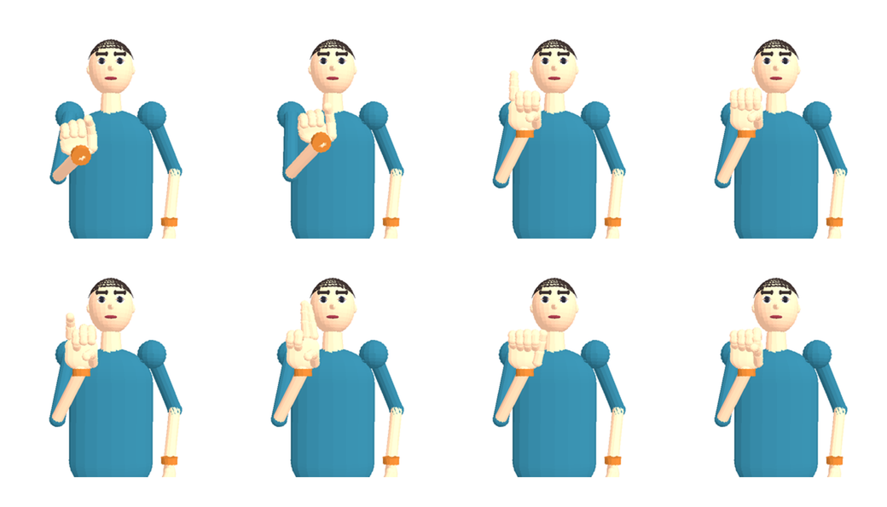
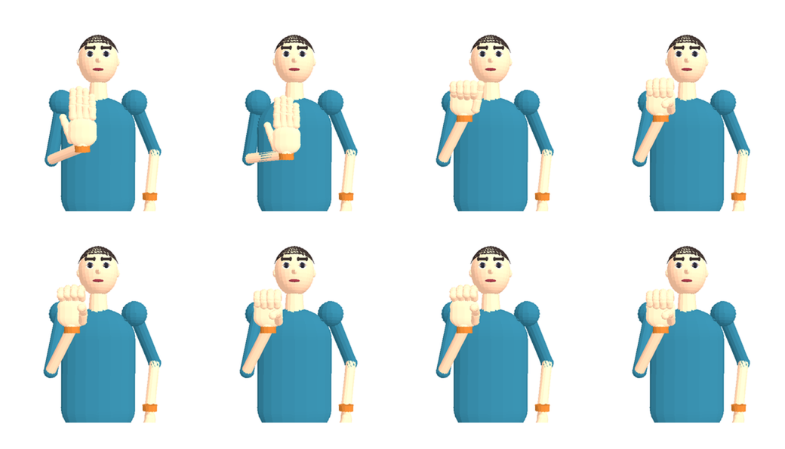
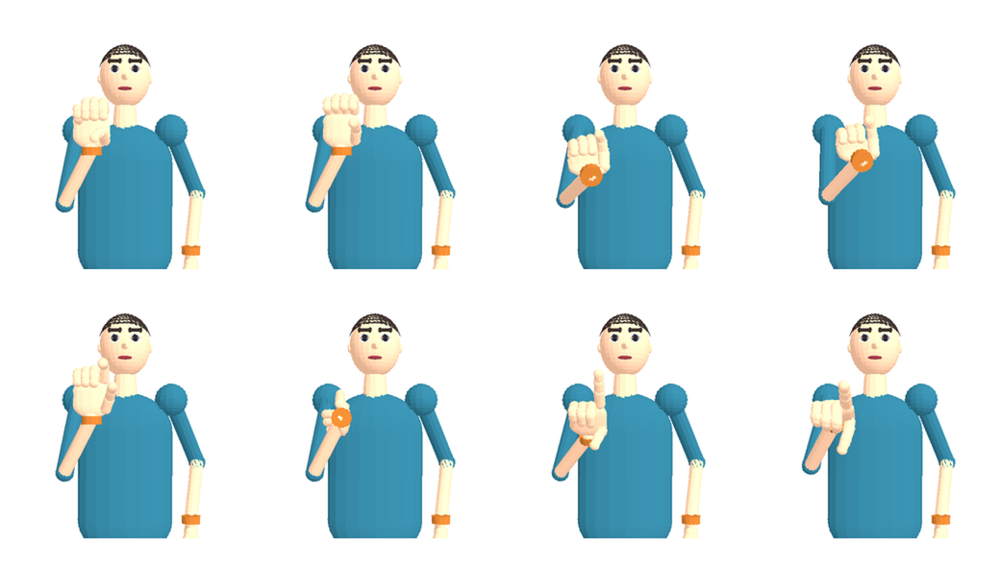

Unverified demo renderer. Interpret the images, record meaning_response and comprehension (1–5) in the response CSV. No correct answer is supplied. Still-frame interpretation is NOT signing comprehension; replace with approved full-motion stimuli before a comprehension study.


